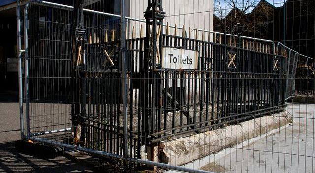
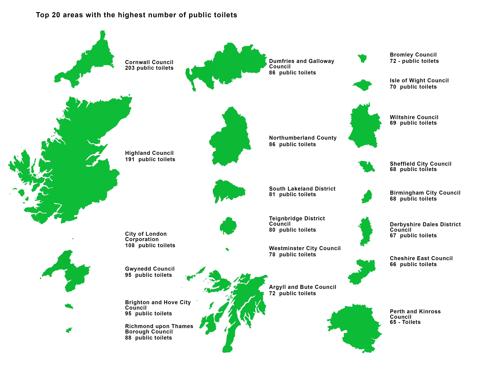
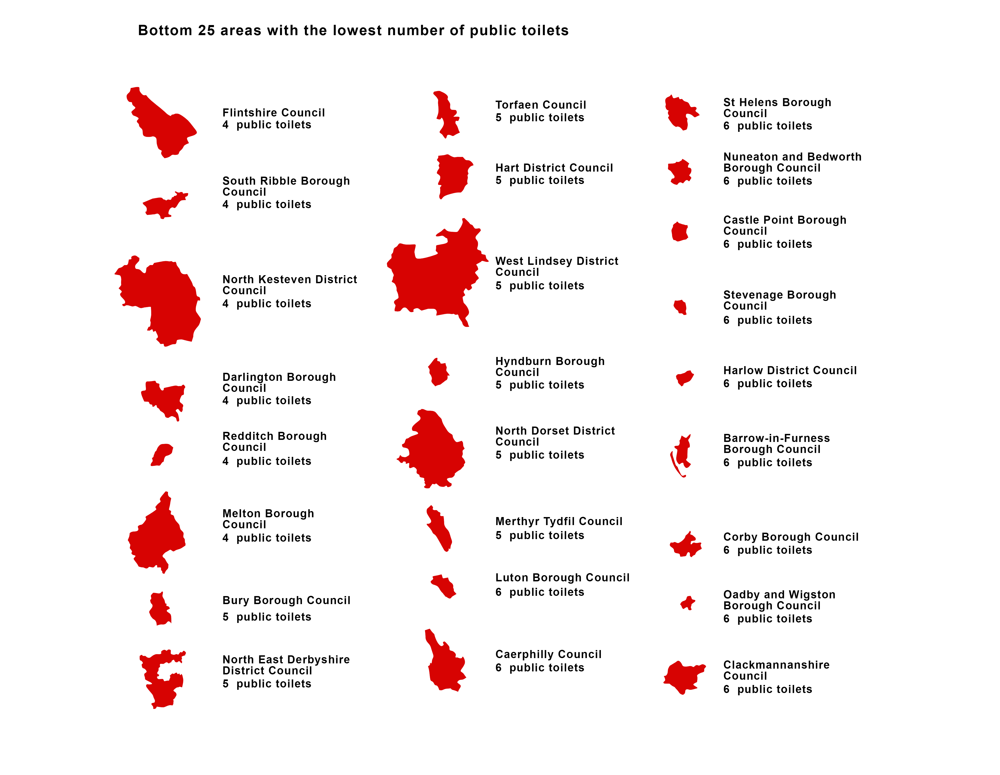

- The Great British Public Toilet Map: provision and access analysed
- Background
- About the data
- Methodology
- Collaboration
- What next?
The Great British Public Toilet Map: provision and access analysed
People across the UK rely on a range of publicly accessible toilet facilities, whether in train stations, libraries, shopping centres, supermarkets, service stations or town centres.
Some of these will be provided by council-run community schemes, but many are run by private operators. The provision of public toilets has changed a lot in the last few decades, with the traditional council-run facility in decline.
 Disused toilet in Belfast. CC BY 2.0, uploaded by [Albert Bridge](http://www.geograph.org.uk/photo/779638 “Albert Bridge").
The Great British Public Toilet Map is the UK’s largest database of publicly accessible toilets, featuring over 10,000 facilities. It aims to show all toilets that the public and the provider consider to be publicly accessible, and therefore a useful resource for anyone reliant on public toilets when away from home.
The public can search the data using the website greatbritishpublictoiletmap.rca.ac.uk on any device.
The project launched nationwide in 2014 using open data, and data from Freedom of Information requests and crowdsourcing. Since then it has featured in online news articles and on national radio.
In this latest project, Great British Public Toilet Analysis, the team has used the dataset to reveal insights into the current state of the UK’s public toilet provision, who is providing them and who can access them.
This project continues the work of The Great British Public Toilet Map to raise awareness of the need for publicly accessible toilets as a reliable public service across the UK, to meet the needs of the entire population. The team focus especially on the people who rely on publicly accessible toilets to leave their house, so they can “enjoy a quality of life many of us take for granted”, says project lead Gail Ramster.
It also provides insights for local campaigners, local government and private providers in terms of who’s getting it right and where provision is woefully inadequate, signalling where investment might be needed but also where best practice can be highlighted for others to benefit from.
Findings
The dataset shows 10,738 publicly accessible toilets, of which 8,955 are public toilets, including those in public buildings such as libraries and town halls (80%). 1,783 are other publicly accessible toilets (17%).
These findings show that 17% of the UK’s publicly accessible toilets are not provided by a public body.
These include train stations (42%), and supermarkets (16%) – Tesco being listed most frequently with 161 stores.
Toilets by area
Provision across the country was explored by looking at the number of toilets in 381 council areas (not including Northern Ireland).
Areas with most publicly accessible toilets (by council boundary):
Cornwall, with 203 toilets
The Highlands, with 191 toilets
The City of London, with 108 toilets
This includes the UK’s largest (Highlands) and smallest (City of London) councils by area. What links these councils is their visitor numbers, showing the link between toilets and leisure.

The areas with the fewest publicly accessible toilets are Darlington, Flintshire, Melton, North Kesteven, Redditch and South Ribble, with just four toilets listed each. There are no areas with no toilets listed.

In 2016 BBC Breakfast reported public toilets had been “wiped out in parts of the UK” and that “ten areas ... have no council-run public toilets at all”. One of the councils the BBC reported having no council-run public toilets was Wandsworth in South London, however The Great British Toilet Map shows that Wandsworth has 38 publicly accessible toilets.
How many toilets are enough toilets?
This depends on many factors: geographical area, resident and visitor population, land use.
The Great British Public Toilet Map shows a mean average of 17,354 residents per toilet, per council area. In 72% of council areas there are 20,000 residents or less per facility. However, 18 council areas have over 40,000 residents per facility, with Flintshire and Bury having over 70,000 residents per facility.
Background
The NHS estimates that between 3 and 6 million people in the UK experience a degree of urinary incontinence. The aim of The Great British Public Toilet Map is to help people manage continence concerns when away from home.
The Great British Public Toilet Map was originally the output of a three-year research study called TACT3, funded by UK research councils and undertaken by The Helen Hamlyn Centre for Design at the Royal College of Art. The team received further funding from Nominet Trust in 2013 to expand from a pilot site to a nationwide resource.
People’s requirements of public toilets can vary depending on what they need, where they need it and how often they need access, particularly if their continence is affected by a medical condition. They might need to empty a colostomy bag or they might need frequent access as a side-effect of medication.
A lack of access to public toilets can cause people to avoid visiting new places, hamper their working lives, or stop them from leaving home altogether – leading to isolation, loneliness and reduced quality of life.
To help people access toilets that meet their specific needs, The Great British Toilet Map team needed to create a detailed toilet finder that could be used to plan ahead and on the go. However, no national open dataset of public toilets existed, and it was becoming increasingly urgent that one was developed since the service became more fragmented across the public and private sectors.
There are around 400 councils at the level of government who provide public toilets, though none are legally obliged to do so. There has been a recent trend for councils to close traditional toilet blocks and begin offering toilets through community toilet schemes where businesses allow non-customers to use their toilets normally in exchange for a small council grant. In addition to this is the myriad of transport operators, shopping centres, supermarkets, department stores, museums, hospitals, national parks and local communities who also provide toilets with varying levels of public accessibility.
The Great British Public Toilet Map team set out to create this national open dataset, first by building a database of council-run toilets collated through council websites and nearly 300 Freedom of Information requests, then combining this with public toilet data from the OpenStreetMap project, open datasets from train operators and local government, and crowdsourced information from users of the website.
This has created the largest resource for publicly accessible toilets in the UK, but what can it tell us about them?
Public toilets have been in decline for many years, however cuts to local government funding since 2008 have sped up this process, with many local news reports of toilets closing and local campaigns trying to save them. As public toilets are a voluntary provision, it is inevitable that their budgets are cut to protect statutory services. As Gail Ramster says:
Using our dataset we are in the unique position to shed light on the changing provision of publicly accessible toilets across the nation. Our toilet analysis can help campaigners to reveal whether their council is underperforming compared to others with similar demographics, geography and industry, and highlight those champion providers who are managing to protect this vital public service.
Our data also reveals the extent to which the public is relying on toilet provided by private providers in the absence of true public facilities, which could have implications for those who may not be comfortable not be comfortable using a private facility (such as the many pubs that participate in community toilet schemes) or might even fear they will be denied access, as use is still at the discretion of the private operator.
About the data
The Great British Public Toilet Map uses several open datasets.
- OpenStreetMap tag amenity: toilets (Open Data Commons Open Database Licence)
- The Local Government Association’s (LGA) aggregated dataset from 80+ councils (each published under Open Government Licence)
- Data from National Rail Enquiries on nearly 800 train station toilets (free to use though no official licence given)
The map also publishes metadata about each toilet, to show the data source and how many times it has been edited, giving a rating to indicate how reliable each data point it is.
“We cannot check the validity of new reports immediately so this gives users an idea for themselves of the accuracy of the information, as they will want to be certain of a toilet’s existence and accessibility before making their way there,” says Gail Ramster.
We also plan to publish the complete dataset under open licence ourselves. This is a critical aim of the project in order to fulfil our initial objective of creating a national open dataset for publicly accessible toilets, and for making sure the data gets out to the public through as many channels as possible to increase access to toilet information and to toilets, enhancing people’s leisure and working lives.
We plan to do this as soon as we’ve established the medium- to long-term sustainability of the project, so we can ensure the database is maintained for those who come to rely on it.
Methodology
The Great British Public Toilet Map pilot site was created in 2011, with design and development from the team’s project partners Neontribe. Neontribe created The Great British Public Toilet Map Explorer, which allowed the team to explore their data in new ways.
The Great British Public Toilet Map Explorer is made up of a dashboard of toilet statistics, listings of toilets by council area, and a search function that allows people to search both the toilet name and ‘notes’ fields. The area listings and search function display results with a preview of the facility showing the toilet’s name, notes and a thumbnail map of its location.
These results click straight through to the toilet edit function on The Great British Public Toilet Map, meaning the team can very quickly click through dozens of toilets within a certain council area, checking them against the data provided by the council to see whether they are showing additional facilities and remove any duplications or reports made in error.
“We also checked for inconsistencies in the map,” Gail explains.
For example, many members of the public listed supermarket toilets as ‘public’, whereas we prefer to record them as ‘public use permitted’. This emphasises that these are not publicly-provided facilities, even though we and the public know that the supermarket would rarely deny access to someone not making a purchase, and in some cases they are members of community toilet schemes, such as in London where Sainsbury’s, ASDA, Tesco and Marks & Spencer all agreed to be members of the Mayor of London’s ‘Open London’ scheme.
The team spent several days exploring, improving and analysing the data. This involved checking that they could not find more toilets in areas with very few. The team then commissioned a designer to create a visualisation, highlighting the difference in levels of publicly accessible toilets from council to council.
Along with statistical findings, the team also found interesting comments about toilets added by members of the public.
Some were complimentary:
"Always nice and clean and welcome after a long drive."
"Probably the cleanest, nicest facilities in rural Scotland."
Others, less so:
"Disgusting and should be reported to the local council."
"Disabled toilet currently under reconstruction after arson attack."
Some reflected the decline in public facilities, with several reporting:
"Currently closed due to council cutbacks."
... along with local efforts to save them:
"Maintained by Jordan’s Cafe since local council decided to close it due to cost."
"Currently being saved from closure by South Lanarkshire Council through Public Conscription."
"The community took these over from the Council which was planning to close them and has refurbished them."
... and private businesses offering public use of their toilets, such as a pub in Shepton Mallet, who added their toilet to the map, saying:
"We are a pub and invite people to use the toilets but make a small contribution to whatever charity box we are running."
These give an insight into The Great British Public Toilet Map users, their positive contributions to the project and the importance they place on the availability of clean, public toilets, along with the issues affecting publicly accessible toilets today.
Collaboration
The ODI Showcase grant helped the team to develop The Great British Public Toilet Map Explorer, buy staff time to clean-up the data prior to analysis and commission data visualisations to share findings with the public and public toilet providers.
The ODI also supported the team with guidance on licensing, as Gail Ramster explains:
We were able to use their expertise in data licensing to understand how we might (one day soon!) best publish our dataset under an open licence, bearing in mind it is part derived from several other open datasets, each with slightly different licences. Data licensing agreements – even those for open data – can seem scary, with a lot of clauses and legal terms. This support is helping us to achieve our long-term aims of creating a national open dataset for publicly accessible toilets.
What next?
The Great British Public Toilet Map team plan to release an app in 2017 to allow greater access to the data for people when they are out and about without access to wifi.
This would be particularly useful in rural areas that are far from commercial properties, such as national parks and coastlines.
The team then hope to release the dataset under open licence for others to incorporate toilets into their apps, maps and guidebooks to get the data out there through as many channels as possible to those who need it most.
Key to the project’s long-term success will be contributions from the public, as Gail explains:
With over 10,000 toilets, and so much local knowledge required to keep them up to date, we really do rely on the public to add, edit and remove toilets and keep the website working for everyone.
Please don’t hesitate to change any data you think to be inaccurate or add missing details. We can also include data on accessible (sometimes called disabled) toilets, whether facilities are gendered or unisex, opening hours, baby-changing, if there’s an attendant, if it’s an automatic toilet (or ‘superloo’), if it can be opened with a RADAR key and if you have to pay to use it. However this data isn’t always complete, for example, we have details on wheelchair accessible toilets for 30% of our facilities.
We’d love it if the public could help us improve this and other details about toilets for those that need it most.
Find out more at greatbritishpublictoiletmap.rca.ac.uk.
The ODI Showcase supports projects that demonstrate how open data can be used to bring longstanding benefits to individuals, organisations and society. The ODI provides grant funding, mentoring and promotional support to maximise these impacts. Find out more here.
If you have ideas or experience in open data that you’d like to share, pitch us a blog or tweet us at @ODIHQ.